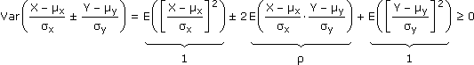

Anhang zu: VERTEILUNGEN
BEWEIS: |ρ| ≤ 1

Also:
|
2 + 2ρ ≥ 0
2 – 2ρ ≥ 0
|

|
–1 ≤ ρ ≤ 1 |
BIJEKTIV WEITERVERARBEITETE ZUFALLSVARIABLE?
Wenn wir eine Zufallsvariable Z über eine Funktion h:

 weiterverarbeiten, ist das Ganze wieder eine Zufallsvariable
weiterverarbeiten, ist das Ganze wieder eine ZufallsvariableX = hoZ
Ist h: ]a,b[
]c,d[ bijektiv und die Z-Dichte g(z) = 0 außerhalb von ]a,b[, dann ist die X-Dichte f(x) = 0 außerhalb von ]c,d[ und sonst …wenn h–1 steigend:
f(x) = g(z)
dz
dx
wenn h–1 fallend:
f(x) = –g(z)
dz
dx
Zusammengefasst:
f(x) =
g(z)
|h'(z)|
DICHTE DER ALLGEMEINEN NORMALVERTEILUNG?
Z = N(0,1) hat Dichte
h:
, x = μ+σz ist bijektiv und damit …X = hoZ hat Dichte
DICHTE DER QUADRIERTEN STANDARDNORMALVERTEILUNG?
Z = N(0, 1)
 |Z| hat Dichte
|Z| hat Dichte h:
+ +, x = z2 ist bijektiv und damit …X = ho|Z| hat Dichte
BEWEIS: ADDITIVITÄT DER NORMALVERTEILUNG
Yi = Xi–μi = N(0,σi) unabhängig
Schritt 1: Y1+Y2 hat Dichte
NR:
Schritt 2: X1+X2 = (Y1 + Y2) + (μ1 + μ2) hat Dichte